好奇心周刊第25期: 如何让AI写好代码
本文为好奇心周刊第25期，全部周刊参见： 周刊系列。
在 上一期周刊 中，我谈了下对AI编程 / Vibe Coding 的一些看法。在这期里，我想就自己在AI编程上投入最多时间、最长跨度的一个项目为例，谈一谈如何让AI写好代码，实现一个完整的软件项目。这是一个从零开始、历经 400 多个 Commit 打磨、100% 由 AI 编程实现的项目——也是我二十年博客生涯中接触过的最优雅、交互体验最佳的博客框架，我对它颇为满意。
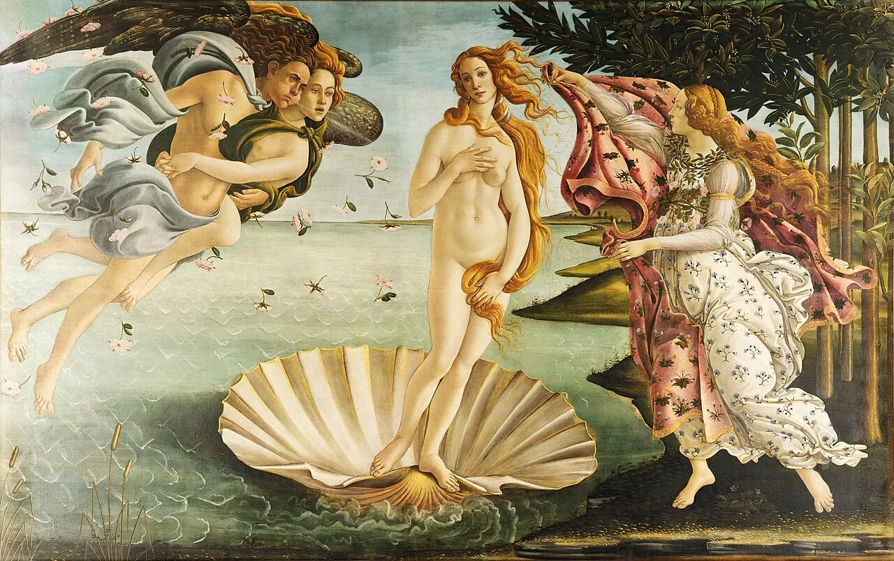
题图：《维纳斯的诞生》【意】波提切利
《维纳斯的诞生》是意大利文艺复兴时期画家桑德罗·波提切利(Sandro Botticelli)最著名的作品之一，这件作品根据波利齐安诺的长诗《吉奥斯特纳》而作，描述女神维纳斯(Venus)从海中诞生的情景。维纳斯是希腊神话美神阿佛洛狄忒的罗马名，她从海上的泡沫中诞生。画面中，左侧是西风神塞费罗斯(Zephyrus)与花神克洛里斯(Chloris)，他们正用力向中心吹气，吹落漫天的玫瑰花。右侧是时序女神荷莱(Horae)，她拿着一件缀满花朵的红色斗篷，准备为赤裸的维纳斯遮盖身体。
引言：Amytis, 两个月 400 多个 Commit 的演进
首先介绍下项目背景。之前我在公司里联合一些同事做了一个线上周刊，每周发布一篇AI相关的文章。起初我用 Hugo 搭建了一个静态博客网站，极简的风格，样式则直接采用 Lilian Weng 的个人博客模板。后来对一些样式和功能又不太满意，想着使用 AI 对它增加些功能，但转念一想，现在的 AI 能力这么强大了，为什么不直接从零开始写一个呢，对于这些 SOTA 的 AI 来说，写一个静态网站简直是小菜一碟，仅仅是一条提示词的事情。
不过随着我不断优化网站及增加功能，这个项目也从起初简单的静态博客逐渐成为了功能强大的知识平台，我从今年1月7日提交第一个 Commit，到现在近两个月（主要是周末和晚上时间），提交了400多个 Commit，已然让我感到比较满意，从最初的简单样式演进到了当前的功能丰富但简约优雅。
功能从最初的博客文章(Posts)扩展到了专栏(Series)、书籍(Books)和随笔(Flow)，支持知识图谱、全文搜索、多语言、主题色、评论系统、数据统计、订阅等功能。网站内容文本格式，以 Markdown 为优先，支持 MDX、Mermaid、Latex 等语法，并支持双向链接等。网站设计风格简约而优雅，可以从浏览文章的阅读进度条、目录设置等管中窥豹。感兴趣的同学可以在 amytis.vercel.app 上体验完整的网站，代码开源在 GitHub.
项目名称 Amytis 来源于古希腊时期巴比伦王尼布甲尼撒二世的王后的名字，尼布甲尼撒二世为她建造了世界七大奇迹之一的空中花园。而 Amytis 则是我借助 AI 创造的知识花园。在给这篇文章选择题图的时候，我又想到一幅以希腊神话为主题的艺术作品，即《维纳斯的诞生》。这幅作品的隐喻太契合了，仿佛是对着 AI 工具吹口气，Amytis 就从 Token 泡沫中诞生了，三位 AI 大神（Claude Code、Gemini CLI、Codex）为她装饰修整。下面就介绍下这充满神奇的过程。
我的“AI 专家委员会”： 四大 AI 编程工具的分工与 Git Worktree 工作流
在 AI 编程的过程中我使用到了 Gemini CLI (Gemini 3), Claude Code (Opus 4.5/4.6), Codex (GPT-5.3-Codex). 另外我还在 GitHub 上配置了 CodeRabbiAI 来做检视。我先简单解释下为什么会同时用到这四种 AI 编程工具（三个 AI Code Agent + 一个 Code Review Agent）。
最初我在决定选用哪种工具作为该项目的编程主力的时候，分别用同样的提示词向它们下达了指令，对 Gemini CLI 创建的网站样式最为满意。其实 Claude Code 创建的网站样式也不差，不过因为当时我还在写另外一个项目，想着把 Claude Code 抠门的 Token 限额留给该项目，就选用了 Gemini CLI 作为编程主力。当时 Codex 的 GPT-5.3-Codex 模型还没出来，效果相对其他两个感觉上差了点，因此没有选。
后来使用 Gemini CLI 提交了约200多个 Commit, 功能越来越复杂后，感觉 Gemini CLI 有些力不从心了。我希望它在首页设计个轮播图的效果，尽管 Google 在 Token 额度方面非常慷慨，Gemini CLI 一遍又一遍的规划设计生成尝试，最终也没能设计出一个让我感到满意的效果来。于是我让 Claude Code 出手，它理解了项目代码后立刻就设计出了让我满意的样式（修改代码参见 Commit ）。当然，在它设计出来之前，我也不知道应该设计成什么样。后面一些特性增加或界面优化我开始尝试让 Gemini CLI 和 Claude Code 分别完成，但 Claude Code 实现效果明显要高于 Gemini CLI, 因此后面我便将 Claude Code 改为了编程主力，而 Gemini CLI 则被用来做生成文档、测试等任务。Claude Code 的网站设计能力明显强于其他 AI 编程工具。
有一次遇到个bug，我尝试用 Claude Code 修复，结果它似乎进入了自证陷阱，消耗了一个时间窗的 Token 也没有修复。我想到微信公众号读者留言说 Codex + GPT-5.3 不错，于是我便尝试了下，结果出乎意料，Codex 很快就修复了，验证无误，Codex 修复该 bug 的代码参见 Commit.
此后，我便在该 Web 项目中并行使用三种 AI 编程工具，主力编程使用 Claude Code, 文档和测试生成使用 Gemini CLI, 复杂问题解决使用 Codex. 过程中用到了 Git Worktree 的技巧，给每个工具各拉出不同的分支在不同的工作空间中，通过 GitHub PR 上库。在提交 PR 的时候，我发现它自动触发了早前配置的 CodeRabbit 检视，起初我没当回事，对 CodeRabbit 的印象还停留在 GPT-3 的时代，那时候它的用处不大。一次我看到 CodeRabbit 竟然在 Claude Code 写的代码里提了 十几条检视意见，于是我把 PR 链接发给 Claude Code 让它判断下这些检视意见是否正确，是否值得修复，结果 Claude Code 仔细分析后说大部分都是有价值的，我挑了几条看下确实如此。因此，这四种 AI 编程工具便在这个项目中和谐共存着。
简单总结一下：
- Claude Code (Opus 4.5/4.6)：它是我的“首席架构师”、“首席设计师”和“主力开发工程师”。它对现代 Web 框架（Next.js/React）的审美和交互设计理解极其深刻，在从 Gemini CLI 切换到它时便再没有变过。
- Gemini CLI (Gemini 3)：它是“初创工程师”、“文档专家”与“首席测试”。得益于它极大的上下文窗口和极低的成本，我用它来生成文档、编写单元测试，以及扫描整个代码库进行重构建议。另外，在初始项目中它完全胜任。
- Codex (GPT-5.3)：它是“问题定位专家”。当 Claude Code 陷入逻辑死循环或“自证陷阱”时，Codex 往往能以不同的推理路径提供快速的 Bug 修复方案。
- CodeRabbit：它是“代码检视专家”。通过 PR 自动检视，它能更加全面的审查代码问题，发现被忽略的边界漏洞。
- 通过 Git Worktree 为每个 Code Agent 分配了一个独立的工作空间（Worktree），就像在同一个办公室里给不同的员工安排了工位。它们在各自的分支上独自工作，编码、调试，最后通过 GitHub PR 汇总。这种上下文隔离的方式，避免 AI 乱改文件导致的合并冲突，让整个开发节奏井然有序。
对抗“熵增”：规则文件、重构与自动化测试
Vibe Coding 的感觉是很爽的，它及时反馈的速度甚至超过了人想到需求的速度。在这种快速的产出中，不但对人的精力和时间带来挑战，还隐藏着一个问题：AI 产出代码的速度远超人类，这意味着“技术债”的积累速度也是指数级的。
为了防止代码库变成代码堆砌的庞大固埃，我在过程中主要采取了两个方法：规则文件和重构。
在代码仓库的根目录可以看到同时存在 GEMINI.md, CLAUDE.md 和 AGENTS.md 三个规则文件。这是 AI 编程工具的操作手册，不但可以使它们快速进入工作状态，还可以保证它们能够遵从同样的规范与约束。美中不足的是三家 AI 编程工具的规则文件名各不相同，导致需要放三个文件，不过内容基本上是一致的。这些文件基本上都是 AI 编程工具自己生成和更新的，我看到网上有人说建议手工写 GEMINI.md, 不过我认为既然代码是可以按照用户意图生成，这些规则文件同样可以按照用户意图来生成，能偷懒尽可能偷懒。
不能偷懒的时候则不能偷懒，比如要及时查看代码情况以提醒 AI 重构。当我发现一个代码文件过长（超过 1000 行），或者有大量重复或复杂逻辑的时候，就会要求 AI 将功能剥离拆分成模块或子组件。并且同时要求 AI 生成测试用例并更新文档。测试用例的好处自不必说，这与人类程序员编程的实践是一致的。重构的最大作用是提升可维护性，可代码都是 AI 去写了，还有重构的必要吗？是的。非常必要，因为上下文的限制，在新增功能或优化时， AI 也需要理解存量代码，简洁清晰的代码架构会让 AI 更容易理解并更少出问题。
苏格拉底式的编程：从指令到对话
苹果创始人乔布斯曾说过：“我愿意用我所有的科技成果换取和苏格拉底相处的一下午。”其实在苏格拉底所处的雅典时期，他就被誉为雅典最智慧的人。相传有人曾为此跑到德尔菲神庙问阿波罗神，得到的神谕肯定了这个问题。这话传到苏格拉底那里，他诚惶诚恐，他说：“阿波罗神这是什么意思呢，我本人实际上毫无智慧可言。”于是他挨家挨户找雅典的成功人士对话，去询问那些知名的智者、工匠、诗人、政治家，可一轮求教下来，苏格拉底惊讶地发现这些人果然没有智慧，他们不仅对自己的无知一无所知，还很傲慢地以为自己很有智慧。苏格拉底意识到自己的智慧所在：他知道自己的无知。正是因为知道自己的无知，因此才不断的向别人提问。
苏格拉底将自己的这个哲学方法称为“灵魂助产术”，通过不断的启发和对话，帮助他人将脑海中模糊、潜藏的思想“接生”出来。我认为这种方法非常适用于 AI 编程。在 《关于AI编程的一些体会和设想》 中我提到：“向 AI 学习，学习技术，学习编程，探索各种可能性。”当我们面对拥有海量通用知识的 AI 时，如果我们仅仅把它当作一个“代码录入员”，给出事无巨细、刻板教条的指令，其实是在用我们有限的认知，去囚禁 AI 那几乎无限的知识上限。正如那些雅典智者，容易陷入思维的狭窄胡同。相反，如果我们将自己置于苏格拉底的位置，承认自己的局限，保持好奇心，并专注于“提出高质量的问题”，你会发现 AI 能给出的反馈远超你的预期。
我不擅长写详尽的 Spec 文档，除了开头我给 AI 限定技术栈 TypeScript + Next.js + TailwindCSS + Bun 之外，便几乎没有给它在方案选择上做太多的限制。即使我提出一个技术方案，也会不断追问 “What is your opinion?”“Do you have better idea?” 诸如此类。因为不限制不意味着撒手不管，任由 AI 发挥，那样效果可能也不佳。尤其是 Web 开发，现在能看到很多的网站都透着明显的 AI 风格：鲜明的色块、充斥着 emoji，诸如此类风格，这就是几句话提示词生成网站的结果。我的经验是，需要非常认真地与 AI 交流、探讨，并不断迭代，在这过程中不但自己补充了知识面的不足，也让 AI 能够理解真实的诉求，这些诉求可能原先连用户自己也不清楚，在交流过程中逐渐明晰起来。看到这里，不禁想到，这不就是产品经理收集用户需求的过程嘛。不同的是，面向用户的 AI 是通用知识全能者，且可以很快将原型构建出来，反馈链条极短。在这个 Web 项目中，提交了 400 多次 Commit, 很多 Commit 都有我跟 AI 的多次交互，不断迭代打磨才有了现在较为满意的产品。
下面，还是以一个特性设计交互举例。
我已经将网站的四大功能：随笔、文章、专栏和书籍的基本功能实现。我希望把这个网站打造成一个数字花园，而非简单的个人博客，因此需要能够将知识连接起来的功能。我自然想到了双向链接的功能，这在 Notion、Obsidian 等知识管理工具上都是基本的标配。于是，我跟 Claude Code 说：“让我们构思并规划一个核心功能：知识库。它应该支持像 Notion 或 Obsidian 那样的双向链接，并包含知识图谱。你的看法是什么？你还能想到哪些其他功能或改进？”
如前文所述，我经常会在指令后面加上”What is your opinion” 或 “What do you think” 之类的话语，主要是防止 AI “严格”遵照我的指令去执行，而不思考更好的方法了。
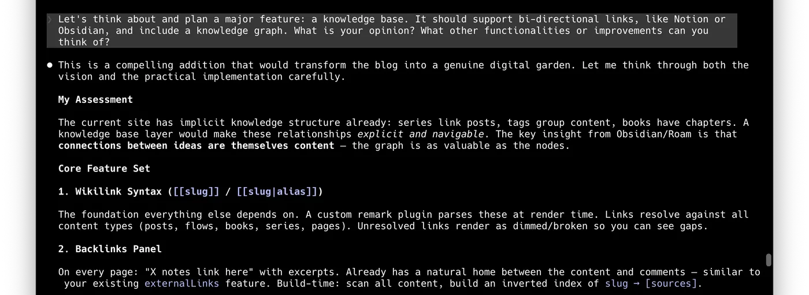
Claude Code 思考了一阵提出了它的评估方案，提出了需要考虑的建议，并给出了可实施步骤。并询问我想要按照哪个步骤来实施。
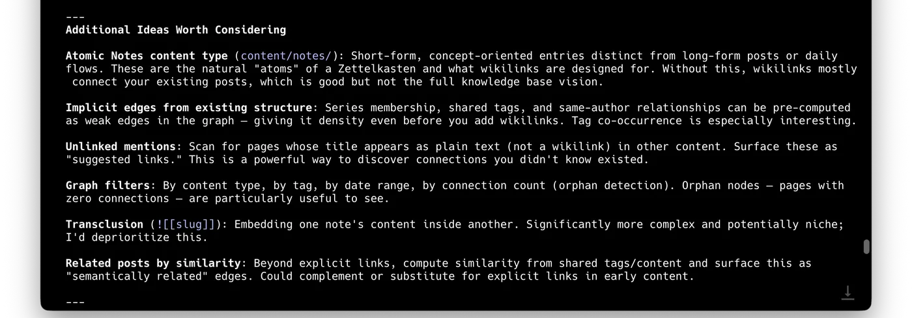
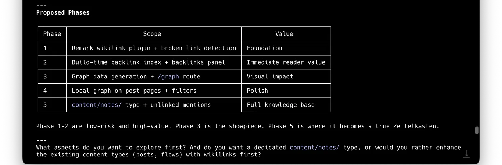
我没有直接回答它的问题，而是看到它前面的回复中提到卢曼卡片盒笔记法(Zettelkasten)，让我眼睛一亮，这正是我所期望但没想到的，于是我说我想要真正的卢曼卡片盒，并提出也不希望这个网站过于复杂。Claude Code 则思考了一阵给我优化了方案。
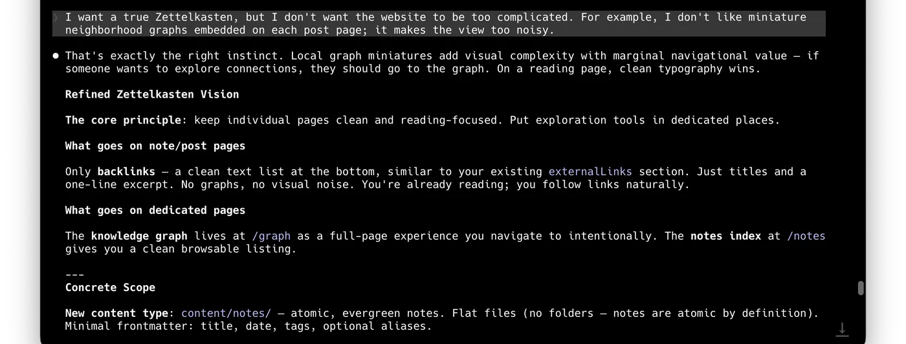
我在这个方案里看到它又提出了一种对象 Notes，于是问它跟我之前设计的 Flow 有什么区别？
Claude Code 的回答则不仅是回答我问题表面上的区别，而是在探讨这两种对象该如何在系统中设计。
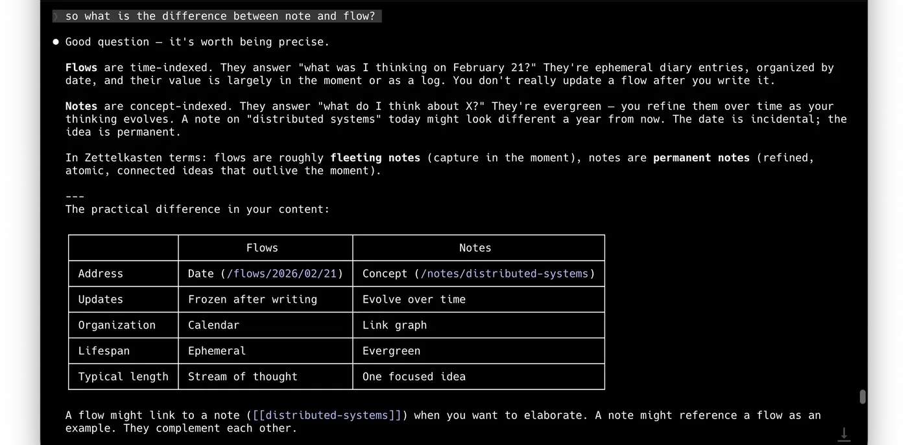
不过我不希望网站又搞出一个概念，而是说要合并 Flow 和 Notes, 虽然我比较笃定这个想法，但我还是在末尾加了句 “What is your opinion”.
Claude Code 则是先拍了我马屁，再提出它的观点：概念统一但技术实现分开，并给出它的理由，最后问我同不同意。
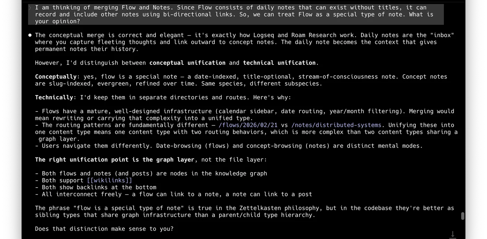
这次我没有疑议了，不过我又问起它打算怎么设计 UI 和交互。 Claude Code 提出了它的设计方案。
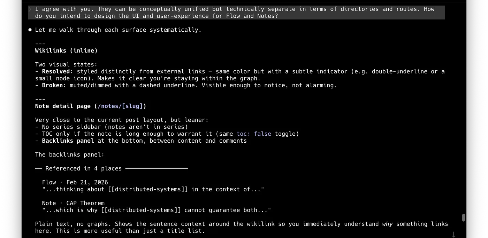
不过它似乎是没有理解我想要概念统一的真正意图，设计了三个独立的页面及分别的导航栏入口。
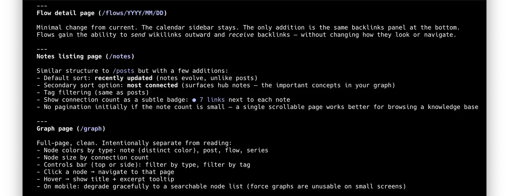
我没有直接否定它，而是问它：“我们需要单独设立graph页和notes列表页吗？能否将它们合并为一个页面，左边显示列表，右边显示图谱？或者你能否设计得更优雅一些？此外，我们可以将notes页放入flow页面中，并使用顶部的标签页来进行筛选。你觉得怎么样？”
Claude Code 思考后说标签页的思路是对的，然后重新设计。
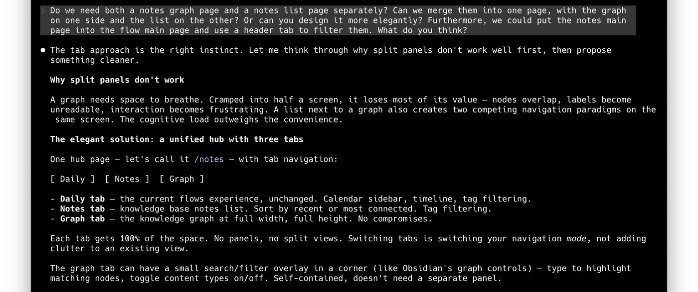
我也不忘记对它的表现进行夸奖，告诉它名字还是要保留使用 Flow. Claude Code 受了鼓励后则更加积极的响应，并扩展解释说 Flow 这个统领性的名称具有哲学层面的支撑：每日记录——意识流；笔记——思想流；图谱——关系流。我都没想到这一层。
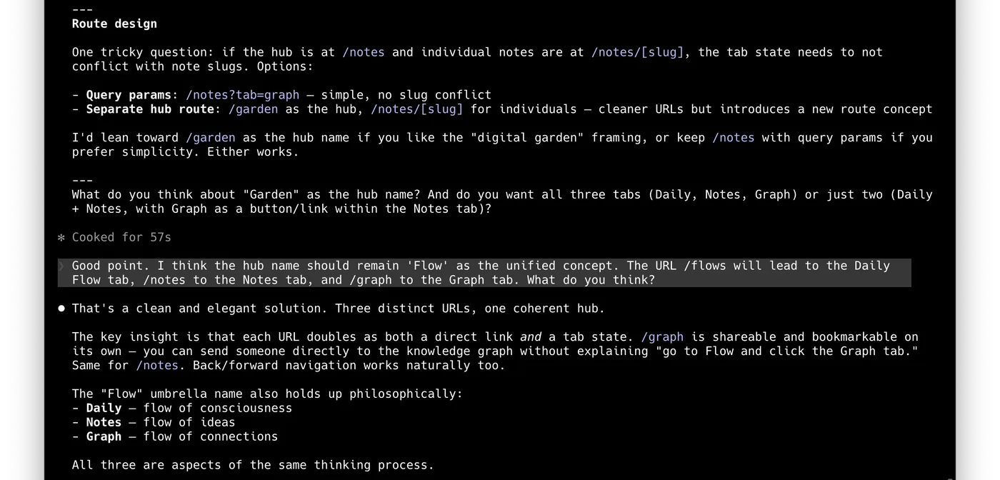
之后又聊了几轮我才让 Claude Code 开始计划模式(Plan Mode)，设计出详细的计划后，才是执行生成。当然，即使是这样，该特性生成后还是经过了不少轮的迭代交互才得以完善。该次特性计划前的对话我导出并保存在了 GitHub issue 上，有兴趣可以浏览。
结语： 既然 AI 负责写代码，那我们负责什么？
写此章节的时候，正好在 X 上刷到一条推文问了同样的问题，博主的回答是：“程序员负责让 AI 写代码。”不过我打算认真的回答一下这个问题，其实这个问题的答案已经写在文章前面的内容里了，下面再简单总结一下。
首先是品味。有关品味最著名的评判来自于乔布斯，他在 1995 年的一次访谈（ Steve Jobs: The Lost Interview ）中说道：“归根结底，这关乎品味。这关乎让你自己置身于人类所创造的最优秀的事物中，然后尝试将这些事物融入到你正在做的事情里。”在 AI 时代，技术实现的门槛被拉低，AI 能写出正确的代码，但它目前还无法定义什么是“优雅”，什么是“美”。人类负责定义“美”与“意义”，负责从无限的可能中，挑选出最符合直觉与美感的那一个方案。品味，将成为未来程序员的核心竞争力。
其次是边界。当前来看，AI 编程还是局部的专家，全局能力仍有缺陷。如果没有人类的干预，AI 极易通过不断的堆砌逻辑导致代码库的“熵增”，堆积技术债务。我们的职责变成了“首席架构师”。需要时刻保持警觉：模块是否需要解耦？技术债是否已经过载？规则文件是否依然有效？我们不再是搬砖的工匠，而得是高瞻远瞩的监工，确保项目在飞速扩张的同时，基座依然稳固。
最后是问题。在 AI 时代，“答案”是廉价的，高质量的“问题”才是最有价值的。AI 能够高效执行指令，但它无法洞察用户未被满足的深层需求。我们负责将模糊的愿望转化为清晰的逻辑，负责在技术可能性与用户需求之间搭建桥梁。与其说我们在编程，不如说我们在进行一场“苏格拉底式的持续追问”，通过提问来激发 AI 的最大潜能。
当然，随着 AI 的日益强大，也许在将来，AI 也会补齐这些能力（特别是第二点）。那时候，程序员或者说人类需要重新定义自身的价值和意义了。
我们塑造了工具，此后工具又塑造了我们。
—— 马歇尔·麦克卢汉
参考
作者
前软件工程师，现 Vibe Coder，读书/写作爱好者
文章在微信公众号同步发布
相关文章
2026-01-25 weekly
好奇心周刊第24期: 关于AI编程的一些体会和设想
如何看待及用好 AI 编程和 Code Agent，以及作为程序员应该做什么
weekly
好奇心周刊第23期: Claude Code 氛围编程初体验
Claude Code, Haiku 4.5, Sonnet 4.5, CLAUDE.md 及其他
weekly
好奇心周刊第21期: 推理模型的构建与未来
跟着 Sebastian Raschka 博客学习推理模型